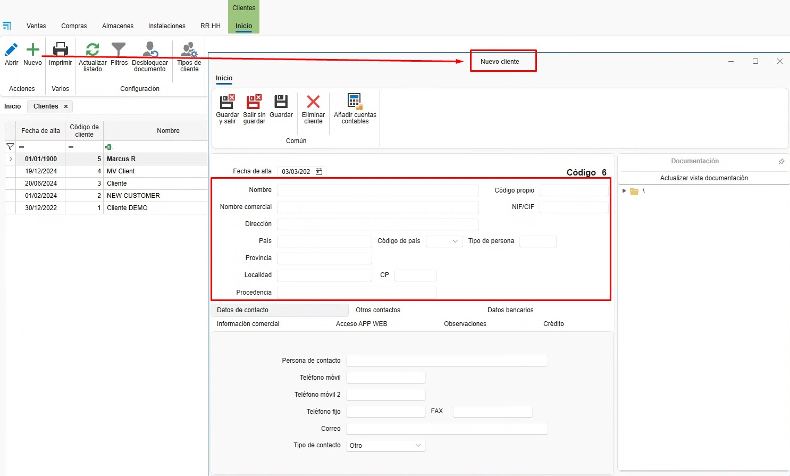
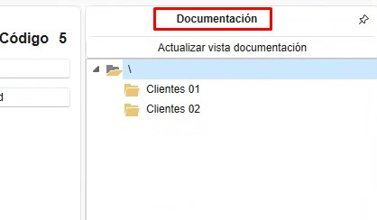
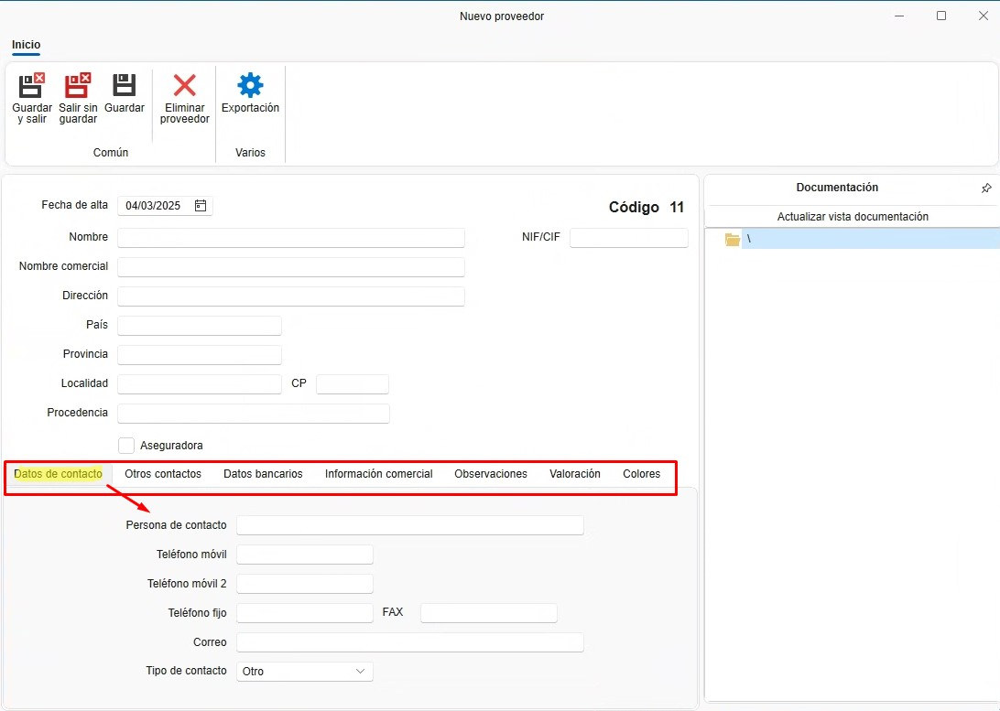

4. Proyectos, Clientes y Proveedores
1. Introducción
Este manual está diseñado para guiar a los usuarios en la creación de Proyectos, Clientes y Proveedores en ENBLAU. De esta manera, se pueden asignar correctamente a los documentos de venta y compra.
2. Proyectos
El proyecto es como la "obra". Se asocia a un proyecto cuantos documentos de ventas y compras sean necesarios.
2.1. Creación de Proyectos
- Desde el apartado de Ventas, puedes acceder a Proyectos.

2.1.1. Nuevo Proyecto
- Crea un proyecto desde el botón "Nuevo".

- Asigna un nombre y selecciona el cliente.

2.1.2. Detalles del Proyecto
- Desde la pestaña General:
- Empresa
- Técnico de obra.
- Comercial.
- Responsable de compras.
- Responsable de facturación.
- Etc.
2.1.3. IVA y Retención
- Puedes confirmar el IVA y la retención con el cliente para el proyecto, lo que podría evitar errores en facturas.

2.1.4. Documentación del Proyecto
- Desde Documentación del proyecto, puedes subir documentaciones, manuales, etc., todo relacionado con el proyecto.
- Con un doble clic sobre la carpeta principal, se abre la ruta donde está el ID de la obra.

- Las subcarpetas se pueden crear directamente en la ruta o previamente desde la configuración en proyectos Directorios por defecto.

2.2. Documentos Relacionados
2.2.1. Documentos de Ventas y Compras
- Todos los documentos relacionados con el proyecto se agrupan aquí.

2.2.2. Programación de Tareas
- Gestiona las tareas asociadas al proyecto. Las tareas se pueden asignar por documento.


3. Clientes
El cliente se asocia a uno o más proyectos.
3.1. Creación de Cliente
- Desde el apartado de Ventas, puedes acceder a Clientes.

3.1.1. Nuevo Cliente
- Crea un cliente desde el botón "Nuevo".

3.1.2. Detalle del Cliente
- Asigna un nombre y rellena los campos necesarios del cliente.
- Nombre.
- Nombre Comercial.
- Dirección.
- NIF/CIF.
- Etc.

3.1.3. Otros Datos
- Se pueden rellenar otros datos del cliente accediendo a otras pestañas.
- Datos de contacto.
- Otros contactos.
- Datos bancarios.
- Información comercial.
- Etc.

3.1.4. Documentación
- Desde Documentación, puedes subir documentación relacionada con el cliente.

- Con un doble clic sobre la carpeta principal, se abre la ruta donde está el código del cliente.

4. Proveedores
El proveedor se asocia a uno o más proyectos.
4.1. Creación de Proveedor
- Desde el apartado de Compras, puedes acceder a Proveedores.

4.1.1. Nuevo Proveedor
- Crea un proveedor desde el botón "Nuevo".

4.1.2. Detalle del Proveedor
- Asigna un nombre y rellena los campos necesarios del proveedor.
- Nombre.
- Nombre Comercial.
- Dirección.
- NIF/CIF.
- Etc.

4.1.3. Otros Datos
- Se pueden rellenar otros datos del proveedor accediendo a otras pestañas.
- Datos de contacto.
- Otros contactos.
- Datos bancarios.
- Información comercial.
- Etc.

4.1.4. Documentación
- Desde Documentación, puedes subir documentación relacionada con el proveedor.

- Con un doble clic sobre la carpeta principal, se abre la ruta donde está el código del proveedor.